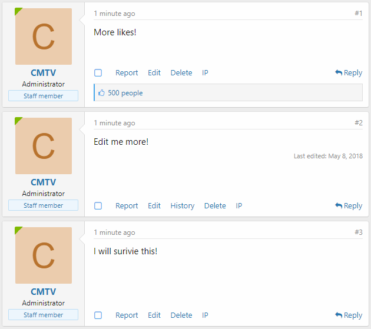
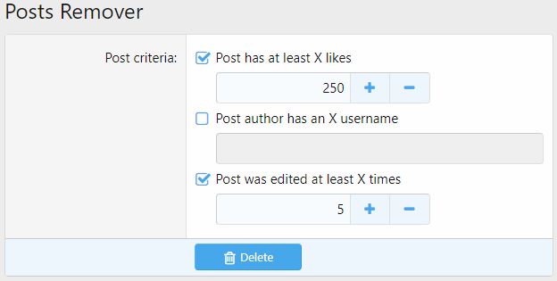

准则¶
当 XenForo 需要根据一些 用户选择的 条件（准则）来测试某些东西（用户/页面/帖子......）时，它使用准则系统。
使用到准则系统的一些地方：
- 成就
- 用户组提升
- 论坛公告
附加组件也可以使用这个系统。
准则类型¶
考虑以下准则： - 用户 有/没有 头像 - 用户有 300 多条留言 - 用户正在创建一个主题 - 当前用户选择的导览标签为 "会员"
前两个准则是指用户本人。 其余的准则是指他当前在论坛上的位置。 这样看起来我们应该有不同类别或 类型 的准则。
在 XenForo 中，有两种开箱即用的准则类型：
- 用户准则 — 处理关于用户本身的准则
- 页面准则 — 处理用户当前位置的准则 + 时间准则
一些附加组件也可以添加自己的准则类型。
从代码的角度来看，准则类型只是一个抽象类 AbstractCriteria 的子类。 它们包含用于处理某些类型的选定准则代码。
反之，AbstractCriteria 则提供了处理准则的通用方法，而不论其含义如何。
准则¶
准则是一个用户可选择的预定义条件。
为什麽是可选的？ 因为管理员/用户可以选择它们（记得成就创建过程）。
为什麽是预定义？ 因为 XenForo 已经知道如何处理它们（使用准则类方法）。
每个准则由两部分组成：规则 和（可选）数据。
规则¶
准则规则简直就是 蛇形命名 的痛处 (words_are_separated_with_underscore_character)。
它有两个基本宗旨：
数据¶
它只是一个可选的附加准则数据数组。 例如，"用户至少发布了 X 条留言" 准则有一个包含一个要素的数据数组：数则消息。
准则系统如何运作¶
在本节中，我们将介绍准则系统是如何从 A 到 Z 运作的。
模板¶
这一切都要从模板代码说起。 以下是准则在模板中看起来的样子：
<xf:checkbox label="Criteria container">
<!-- 准则 -->
<xf:option name="foo_criteria[criterion_1_rule][rule]" value="criterion_1_rule" ... />
<!-- 含数据的准则 -->
<xf:option name="bar_criteria[criterion_2_rule][rule]" value="criterion_2_rule" ... >
<xf:... name="bar_criteria[criterion_2_rule][data][param_1]" ... />
<xf:... name="bar_criteria[criterion_2_rule][data][param_2]" ... />
</xf:option>
</xf:checkbox>
如你所见，准则只是一个复选框，里面有可选的输入字段（准则数据）。 我们来分析一下代码：
foo_criteria和bar_criteria是 input 容器，通常foo和bar部分是指准则类型。 例如，user_criteria[...]让我们知道这个准则属於用户准则。value="criterion_1_rule"和value="criterion_2_rule"显然是准则的规则。
Note
请记住，name 属性中的 criterion_1/2_rule 不一定是准则规则！ 这些只是 input 容器的名称。 你可以轻而易举地写下 <xf:option name="foo[bar][rule]" value="criterion_rule" />，它就会正确地运作。 准则规则会是 criterion_rule，而不是 bar。
(可选) 保存选定的准则¶
在 Controller 内部，可以将上一节的准则表单数据进行筛选、编码，并保存在 mediumblob 类型的数据库 Column 中，以便更好地使用：
$fooCriteriaInput = $this->filter('foo_criteria', 'array');
$barCriteriaInput = $this->filter('bar_criteria', 'array');
$form->basicEntitySave($bazEntity, [
'foo_criteria' => $fooCriteriaInput,
'bar_criteria' => $barCriteriaInput
]);
$bazEntity Structure 示例：
public static function getStructure(Structure $structure)
{
$structure->table = 'xf_baz';
$structure->shortName = 'XF:Baz';
$structure->primaryKey = 'baz_id';
$structure->columns = [
'baz_id' => ['type' => self::UINT, 'autoIncrement' => true],
'foo_criteria' => ['type' => self::JSON_ARRAY, 'default' => [], 'required' => 'please_select_criteria_that_must_be_met'],
'bar_criteria' => ['type' => self::JSON_ARRAY, 'default' => []]
];
return $structure;
}
准则物件¶
为了使用准则系统，我们需要从选定的准则表单数据中创建一个准则物件，这可以通过 app 的 criteria() 方法来完成：
/** @var \Qux\Criteria\Foo $fooCriteria */
$fooCriteria = \XF::app()->criteria('Qux:Foo', $bazEntity->foo_criteria);
/** @var \Qux\Criteria\Bar $barCriteria */
$barCriteria = \XF::app()->criteria('Qux:Bar', $bazEntity->bar_criteria);
从现在开始，我们可以使用所有的 AbstractCriteria 功能，加上我们在子类 Foo/Bar 中额外编写的所有内容。
匹配¶
当我们想检查某个东西（User）是否符合选定的准则时，我们可以使用 isMatched 方法：
$visitor= \XF::visitor();
if ($fooCriteria->isMatched($visitor))
{
// 访客符合所有选定的准则
}
else
{
// 访客不符合一个或多个准则
}
isMacthed() 将准则规则転换为帯有 _match 前缀的驼峰式命名方法： criterion_1_rule > _matchCriterion1Rule，并尝试在准则：型 class 中找到这样一个方法（在我们的例子中是 Foo 类）：
// Qux/Criteria/Foo.php
protected function _matchCriterion1Rule(array $data, \XF\Entity\User $user)
{
/* ... 处理准则 ... */
return true; // 用户符合当前准则
/* 或者 */
return false; // 用户不符合当前准则
}
如果在 class 中找不到某个方法，isMatched() 会调用 isUnknownMatched()，其行为可以在 AbstractCriteria 祖先中设置（默认返回 false）。
如果没有选定任何准则，isMatched() 将返回 $matchOnEmpty 变量，默认为 true。 你可以在使用 isMatched() 方法 之前 调用 $crteriaObj->setMatchOnEmpty(false) 来改变这种行为：
$visitor= \XF::visitor();
$fooCriteria->setMatchOnEmpty(false);
if ($fooCriteria->isMatched($visitor))
{
// 访客符合所有选定的准则
}
else
{
// 访客不符合一个或多个准则
}
准则是如何运作的 (例子)¶
想象一下，你想给所有拥有头像并获得至少 5 个赞的用户颁发一个成就。
在创建成就时，你选择 "用户有头像"（规则 has_avatar）和 "用户至少収到 X 个賛"（规则 like_count）准则。 最后一个还具有一个包含一个元素的数据数组：喜欢的数量。
您所选择的准则保存在 xf_trophy 资料表中的 user_criteria column。
当 XenForo 决定检查，是否给用户颁发成就时，它会将规则転换为驼峰式命名方法：
like_count>_matchLikeCount()has_avatar>_matchHasAvatar()
由于所选的两个准则都是用户准则，因此 XenForo 满足用户准则 class，并试图在其中找到这些方法：
// XF/Criteria/User.php
//...
protected function _matchLikeCount(array $data, \XF\Entity\User $user)
{
return ($user->like_count && $user->like_count >= $data['likes']);
}
//...
protected function _matchHasAvatar(array $data, \XF\Entity\User $user)
{
return $user->user_id && ($user->avatar_date || $user->gravatar);
}
//...
如果 所有 位置的方法都返回 true，我们的用户就符合选定的准则，因此将获得一个成就。
如果在 User 准则类中找不到某些方法，XenForo 会调用 isUnknownMatched() 方法，进而触发 criteria_user 事件，允许附加组件制作者添加他们的自定义准则处理程序。 （参见"自定义用户/页面准则范例"）。
额外准则数据¶
有时，在编写准则模板代码时，你需要访问额外的数据，而这些数据不是通过 view 参数传递的。
这就是 getExtraTemplateData() 方法存在的意义。 默认情况下，它包含现有的用户组、语言、风格样式、时区。
你可以在你的自定义准则类型 class 中复盖这个方法。
在自定义准则类型中添加数据¶
在您的自定义准则 class 中复盖 getExtraTemplateData() 方法：
public function getExtraTemplateData()
{
$templateData = parent::getExtraTemplateData();
$additionalData = [];
/** @var \XF\Repository\Smilie $smilieRepo */
$smilieRepo = \XF::repository('XF:Smilie');
$additionalData['smilies'] = $smilieRepo->findSmiliesForList()->fetch();
return array_merge($templateData, $additionalData);
}
在现有准则类型中添加数据¶
你可以使用 criteria_template_data 事件监听器来添加你自己的额外准则数据：
public static function criteriaTemplateData(array &$templateData)
{
/** @var \XF\Repository\Smilie $smilieRepo */
$smilieRepo = \XF::repository('XF:Smilie');
$templateData['smilies'] = $smilieRepo->findSmiliesForList()->fetch();
}
"helper_criteria" 模板¶
每当你作为附加组件制作者想让目标 用户/管理员 有办法选择 用户/页面/其他附加组件 的准则时（甚至全部一起），你可以简単地使用 helper_criteria。
简而言之，helper_criteria 是一个允许在多处使用基于准则类型的核取方块介面的管理模板，无需复制粘贴相同代码。
helper_criteria 包含 两个 类型的巨集：*criteria_name*_tabs 和 *criteria_name*_panes，适用于每个准则类型。 例如：用户准则类型的 user_tabs 和 user_panes 巨集。
标签¶
标签用于区分他们所使用模板内的不同准则类型：

使用标签时，第一个标签往往包含与准则无关的字段/选项。 然后到准则标签。
在上图中，第一个标签包含通知的选项。 红框中的前两个标签与用户准则类型有关。 最后一个与页面准则类型有关。
helper_criteria 中的标签被归类在准则类型巨集下：
<xf:macro name="foo_tabs" arg-container="" arg-active="">
<xf:set var="$tabs">
<a class="tabs-tab{{ $active == 'foo' ? ' is-active' : '' }}"
role="tab" tabindex="0" aria-controls="{{ unique_id('criteriaFoo') }}">Foo criteria</a>
<a class="tabs-tab{{ $active == 'foo_extra' ? ' is-active' : '' }}"
role="tab" tabindex="0" aria-controls="{{ unique_id('criteriaFooExtra') }}">Foo criteria extra</a>
</xf:set>
<xf:if is="$container">
<div class="tabs" role="tablist">
{$tabs|raw}
</div>
<xf:else />
{$tabs|raw}
</xf:if>
</xf:macro>
In the code above, foo is a criteria type. It has two tabs, one for general foo criteria and another for extra foo criteria.
在上面的代码中，foo 是一个准则类型。 它有两个标签，一个用于一般的 foo 准则，另一个用于额外的 foo 准则。
Panes (窗格)¶
Panes 仅仅包含准则。
和标签一样，helper_criteria 中的 Panes 也是按照准则类型巨集来归类的：
<xf:macro name="foo_panes" arg-container="" arg-active="" arg-criteria="!" arg-data="!">
<xf:set var="$panes">
<li class="{{ $active == 'foo' ? ' is-active' : '' }}" role="tabpanel" id="{{ unique_id('criteriaFoo') }}">
<xf:checkboxrow label="Criteria group 1">
<xf:option name="foo_criteria[criterion_1_rule][rule]" value="criterion_1_rule" ... />
<xf:option name="foo_criteria[criterion_2_rule][rule]" value="criterion_2_rule" ... />
</xf:checkboxrow>
<xf:checkboxrow label="Criteria group 2">
<xf:option name="foo_criteria[criterion_3_rule][rule]" value="criterion_3_rule" ... />
<xf:option name="foo_criteria[criterion_4_rule][rule]" value="criterion_4_rule" ... />
</xf:checkboxrow>
</li>
</xf:set>
<xf:if is="$container">
<ul class="tabPanes">
{$panes|raw}
</ul>
<xf:else />
{$panes|raw}
</xf:if>
</xf:macro>
使用 "helper_criteria"¶
要使用 "helper_criteria" 的功能，你需要加入它的巨集。
准备数据¶
如果您 没有 您所选定的准则保存在数据库中的某个地方，或者您要使用的准则类型 不需要 任何额外的数据，可以跳过本节。
首先，您需要检索已保存的选定准则，并从中创建一个准则物件。 在本节中，我们将以 Page 准则为例子：
$savedCriteria = /* Retrieve it somehow... */
// 准则物件
$criteria = $this->app()->criteria('XF:Page', $savedCriteria)->getCriteriaForTemplate();
// 准则额外数据
$criteriaData = $criteria->getExtraTemplateData();
$viewParams = [
/* ... */
'criteria' => $criteria,
'criteriaData' => $criteriaData
];
return $this->view(/* ... */, $viewParams);
包含没有内容的标签¶
要包含没有内容的标签准则，你需要使用 <xf:macro... 标签，并将 arg-container 属性设置为 0。
<xf:macro template="helper_criteria" name="page_panes" arg-container="0" arg-criteria="{$criteria}" arg-data="{$criteriaData}" />
如果你没有保存准则，你可以直接将空数组 {{ [] }} 传递给 arg-criteria 属性。 不要忘记把 page_panes 中的 page 替换成你想使用的准则类型名称。
请记住，所有的准则都是用 <li> 标签包住的，所以你需要应用一些 CSS 样式（例如 list-style-type: none;）。
有内容的标签¶
为了使用准则标签，你需要组织页面。 坚持以下范例结构：
<xf:form ... class="block">
<div class="block-container">
<!-- 标签 -->
<h2 class="block-tabHeader tabs hScroller" data-xf-init="h-scroller tabs" role="tablist">
<span class="hScroller-scroll">
<!-- Main tab where fields/options are located -->
<a class="tabs-tab is-active" role="tab" tabindex="0" aria-controls="MAIN_TAB_ID">Main tab title</a>
<!-- 准则标签 -->
<xf:macro template="helper_criteria" name="page_tabs" arg-userTabTitle="Custom tab name (optionally)" />
</span>
</h2>
<!-- 窗格 -->
<ul class="block-body tabPanes">
<!-- Main pane -->
<li class="is-active" role="tabpanel" id="MAIN_TAB_ID">
<!-- Fields and options -->
</li>
<!-- 准则窗格 -->
<xf:macro template="helper_criteria" name="page_panes"
arg-criteria="{$criteria}"
arg-data="{$criteriaData}" />
</ul>
<xf:submitrow sticky="true" icon="save" />
</div>
</xf:form>
同样，如果你没有任何准则数据，或者甚至假设没有，请将 {{ [] }} 传递给 arg-criteria 属性。
在 "helper_criteria" 中添加自定义准则类型¶
如果你想在 helper_criteira 模板中添加自定义准则类型，你需要创建一个 helper_criteria 模板的模板修改。
进入 Admin CP 中的 "外観 > 模板修改"，切换到 "管理" 标签，点击 "添加模板修改" 按钮。
我们要在模板的最底部添加我们的标签和窗格，所以将 "搜寻类型" 切换为 "正规表达式"。
在 "查找" 栏中输入 /$/。
最后，在 "替换" 字段中添加标签和窗格的巨集代码。 举例：
<xf:macro name="foo_tabs" arg-container="" arg-active="">
<xf:set var="$tabs">
<a class="tabs-tab{{ $active == 'foo' ? ' is-active' : '' }}"
role="tab" tabindex="0" aria-controls="{{ unique_id('criteriaFoo') }}">Foo criteria</a>
<a class="tabs-tab{{ $active == 'foo_extra' ? ' is-active' : '' }}"
role="tab" tabindex="0" aria-controls="{{ unique_id('criteriaFooExtra') }}">Foo criteria extra</a>
</xf:set>
<xf:if is="$container">
<div class="tabs" role="tablist">
{$tabs|raw}
</div>
<xf:else />
{$tabs|raw}
</xf:if>
</xf:macro>
<xf:macro name="foo_panes" arg-container="" arg-active="" arg-criteria="!" arg-data="!">
<xf:set var="$panes">
<li class="{{ $active == 'foo' ? ' is-active' : '' }}" role="tabpanel" id="{{ unique_id('criteriaFoo') }}">
<xf:checkboxrow label="Criteria group 1">
<xf:option name="foo_criteria[criterion_1_rule][rule]" value="criterion_1_rule" ... />
<xf:option name="foo_criteria[criterion_2_rule][rule]" value="criterion_2_rule" ... />
</xf:checkboxrow>
<xf:checkboxrow label="Criteria group 2">
<xf:option name="foo_criteria[criterion_3_rule][rule]" value="criterion_3_rule" ... />
<xf:option name="foo_criteria[criterion_4_rule][rule]" value="criterion_4_rule" ... />
</xf:checkboxrow>
</li>
</xf:set>
<xf:if is="$container">
<ul class="tabPanes">
{$panes|raw}
</ul>
<xf:else />
{$panes|raw}
</xf:if>
</xf:macro>
现在，您可以在任何地方使用您的准则（请参见 "使用helper_criteria" )。
自定义用户/页面准则范例¶
比方说，我们想创建一个准则来检查我们的用户是否在単则留言上有 X 个或更多的賛。
由于我们的准则是指用户，所以我们将创建一个属於用户准则的准则。
增加模板修改¶
首先，我们需要将我们的准则添加到用户准则列表中。 进入 Admin CP 中的 "模板修改" 页面，选择 "Admin" 标签，点击右上角的 "添加模板修改" 按钮。
Warning
如果没有 "Admin" 标签，请确保你已经激活了开发模式。
我们将修改 helper_criteria 模板，因此将其写入到 "模板" 字段。 在这个例子中，我将使用 likes_on_single_message "修改 key 值" 来修改这个模板。
我们的准则是关于留言的点賛数。 这意味着它应该在 "内容和成就" 部分下。 这表示我们只需要找到 <！--[XF:user:content_bottom]-->，然后用下面的代码替换。
<xf:option name="user_criteria[likes_on_single][rule]" value="likes_on_single" selected="{$criteria.likes_on_single}" label="Likes on single message:">
<xf:numberbox name="user_criteria[likes_on_single][data][likes]" value="{$criteria.likes_on_single.likes}" size="5" min="0" step="1" />
</xf:option>
$0
从这一刻起，我们已经可以看到，甚至可以在创建成就、通知和提升用户组时为我们的准则设置一个值。
增加代码事件监听器¶
我们已经创建了我们的准则。 但对于 XenForo 来说，它是未知的，当符合这种准则时，它总是返回 "false"。 我们需要告诉 XenForo，当它符合未知准则时该怎麽做。
进入 "开发 > 代码事件监听器" 页面，点击 "添加代码事件监听器" 按钮。
在 "监听事件" 字段中选择 criteria_user（user 因为我们的准则属於用户准则）。 在 "运行 callback" 字段中，我们应该指定匹配准则时要调用的类和方法。
在 addon 根目录下创建一个文件 Listener.php，如果你还没有的话，在那里添加一个新的方法 criteriaUser：
<?php
namespace YOUR_ADDON_ID;
class Listener
{
public static function criteriaUser($rule, array $data, \XF\Entity\User $user, &$returnValue)
{
}
}
你可以用 YOUR_ADDON_ID\Listener 和 criteriaUser 分别填写 "Class" 和 "Method" 字段。
处理准则¶
由于我们的 criteriaUser 方法对每个未知的准则都会被触发，我们需要确保 $rule 等于 likes_on_single （我们在 HTML 标签中指定的规则）。
public static function criteriaUser($rule, array $data, \XF\Entity\User $user, &$returnValue)
{
switch ($rule)
{
case 'likes_on_single':
/** 处理代码在这里! */
break;
}
}
现在，我们需要写代码来实际检查一个用户是否有 X 个或更多赞的留言。
这可以通过简単的 SQL 查找轻松实现，从 xf_post 中选择一条超过 X 个赞的记录（ likes column ），并且 user_id 等于当前匹配的用户 ID。
所以，下面是查找语句：
SELECT `likes` FROM `xf_post` WHERE `user_id` = ? ORDER BY `likes` DESC LIMIT 1
以及方法代码：
public static function criteriaUser($rule, array $data, \XF\Entity\User $user, &$returnValue)
{
switch ($rule)
{
case 'likes_on_single':
// 获取数据库
$db = \XF::db();
// 用于选择単个用户帖子的最大点賛数的数据库查找
$query = "SELECT `likes` FROM `xf_post` WHERE `user_id` = ? ORDER BY `likes` DESC LIMIT 1";
// 检索最大点賛数
$likes = $db->fetchOne($query, [$user->user_id]);
// 检查我们是否有来自数据库的结果(我们期望有一个数字)
if (is_int($likes)) {
// 如果用户的信息有 X 个或更多的賛，则返回 true；如果没有，则返回 false
$returnValue = ($likes >= $data['likes']);
} else {
$returnValue = false;
}
break;
}
}
要注意以下几点：
- 我们使用
$user变量来检索当前匹配的用户。 我们可以使用这个变量，因为我们的准则属於 用户 准则。 - 我们可以通过
$data数组访问数据。 它包含了我们在 模板修改中已添加 的字段的数据。 我们只添加了一个<xf:numberbox...，其中name属性等于user_criteria[likes_on_single][data][likes]。 这就是为什麽我们可以在上面的代码中使用$data['likes']。
现在一切都搞定了。 让我们测试一下吧！
测试（成就）¶
创建一个 "人人为我" 的成就。 在 "用户准则" 标签上，"単则留言的点賛数" 字段，例如，5。
接下来，在你论坛的某处创建一个测试留言，然后用五个不同的用户点賛五次（或者直接手动设置 likes 栏的值）。
然后，进入 "工具 > 计画任务"，通过点击运行按钮 (循环-箭头) "更新用户成就值" 计画。

很好！
Warning
如果您没有获得 "人人为我" 成就，请尝试登出、登录并重新运行 "更新用户成就值" 计画。
测试（通知）¶
进入 "联系 > 通知"，点击 "添加通知" 按钮。 在 "用户准则" 标签上，将 "単则留言的点賛数" 字段同样设置为 5。 保存通知。
接下来，在你论坛的某处创建一个测试留言，然后用五个不同的用户点賛五次（或者直接手动设置 likes 栏的值）。
现在，你应该会看到一则通知：

你可以 下载 基于这个范例构建的附加组件资源 (2.0.10)。
自定义准则类型范例¶
想象一下，我们正在创建一个附加组件（附加组件 ID：PostsRemover），用于删除所有符合选定准则的帖子。 一个可用准则的列表：
- 帖子至少有 X 个点賛数
- 帖子作者有一个 X 用户名
- 帖子至少被编辑了 X 次
- 帖子被编辑的次数不超过 X 次
- 帖子在 X 之前发表
- 帖子发表于 X 之后
显然，对于这样的准则，我们需要一种新的准则类型：帖子准则。
Criteria type class 准则类型 class¶
我们应该先在 addon 的 Criteria 目录下创建一个继承 AbstractCriteria 的新 class Post：
<?php
namespace PostsRemover\Criteria;
use XF\Criteria\AbstractCriteria;
class Post extends AbstractCriteria
{
}
现在我们需要为 addon 支援的所有准则写代码。 在这个例子中，我将为上面列表中的前三个准则写代码：
<?php
namespace PostsRemover\Criteria;
use XF\Criteria\AbstractCriteria;
class Post extends AbstractCriteria
{
// 帖子至少有 X 个点賛数
protected function _matchLikeCount(array $data, \XF\Entity\Post $post)
{
return ($post->likes && $post->likes >= $data['likes']);
}
// 帖子作者有一个 X 用户名
protected function _matchUsername(array $data, \XF\Entity\Post $post)
{
return $post->username === $data['name'];
}
// 帖子至少被编辑了 X 次
protected function _matchEditedCount(array $data, \XF\Entity\Post $post)
{
return $post->edit_count && $post->edit_count >= $data['count'];
}
/* ================ 处理其他准则 ================ */
}
isMatched(...) 方法用于调用我们刚才创建的 _match 方法，只接受 User 实体，我们要写一个自定义的 isMatched()、 isUnknownMatched() 和 isSpecialMatched() 方法的变体。
由于我们正在创建帖子准则，我们需要创建自己的 isMatchedPost() 方法：
public function isMatchedPost(\XF\Entity\Post $post)
{
if (!$this->criteria)
{
return $this->matchOnEmpty;
}
foreach ($this->criteria AS $criterion)
{
$rule = $criterion['rule'];
$data = $criterion['data'];
$specialResult = $this->isSpecialMatchedPost($rule, $data, $post);
if ($specialResult === false)
{
return false;
}
else if ($specialResult === true)
{
continue;
}
$method = '_match' . \XF\Util\Php::camelCase($rule);
if (method_exists($this, $method))
{
$result = $this->$method($data, $post);
if (!$result)
{
return false;
}
}
else
{
if (!$this->isUnknownMatched($rule, $data, $post))
{
return false;
}
}
}
return true;
}
protected function isSpecialMatchedPost($rule, array $data, \XF\Entity\Post $post)
{
return null;
}
protected function isUnknownMatchedPost($rule, array $data, \XF\Entity\Post $post)
{
return false;
}
我们只需用 isMatched(...) 方法代码将 User 实体类型的 $user 变量替换为 Post 实体类型的 $post 变量。
由于我们不打算处理特殊和未知的准则，我们在 isSpecialMatchedPost 中返回 null，在 isUnknownMathcedPost 方法中返回 false。
模板¶
抛开添加 admin 路由、编写 Controller 和在后台做其他操作的过程，直接跳到我们页面的模板代码：
<xf:title>Posts Remover</xf:title>
<xf:form action="{{ link('posts-remover/remove') }}" ajax="true" class="block">
<div class="block-container">
<xf:checkboxrow label="Post criteria">
<xf:option label="Post has at least X likes" name="post_criteria[like_count][rule]" value="like_count">
<xf:numberbox name="post_criteria[like_count][data][likes]" size="5" min="0" step="1" />
</xf:option>
<xf:option label="Post author has an X username" name="post_criteria[username][rule]" value="username">
<xf:textbox name="post_criteria[username][data][name]" ac="true" />
</xf:option>
<xf:option label="Post was edited at least X times" name="post_criteria[edited_count][rule]" value="edited_count">
<xf:numberbox name="post_criteria[edited_count][data][count]" size="5" min="0" step="1" />
</xf:option>
</xf:checkboxrow>
<!-- 其他准则的模板代码 -->
<xf:submitrow sticky="true" icon="delete"/>
</div>
</xf:form>
匹配准则¶
在我们页面的 Controller 中，我们需要创建一个名为 actionRemove 的方法来处理 "移除" 按钮的点击：
public function actionRemove()
{
}
首先，让我们从页面表单中检索 post_criteria 数组：
public function actionRemove()
{
$postCriteriaInput = $this->filter('post_criteria', 'array');
}
其次，我们需要从检索到的页面表单数据中创建一个准则物件：
public function actionRemove()
{
$postCriteriaInput = $this->filter('post_criteria', 'array');
/** @var \PostsRemover\Criteria\Post $postCriteria */
$postCriteria = $this->app()->criteria('PostsRemover:Post', $postCriteriaInput);
}
默认情况下，发布帖子 将匹配 empty 准则（当没有选择任何内容时），这将导致所有论坛帖子都被删除。 为了避免这种情况，我们需要通过 setMatchOnEmpty() 方法手动设置匹配 empty 准则的结果：
public function actionRemove()
{
$postCriteriaInput = $this->filter('post_criteria', 'array');
/** @var \PostsRemover\Criteria\Post $postCriteria */
$postCriteria = $this->app()->criteria('PostsRemover:Post', $postCriteriaInput);
$postCriteria->setMatchOnEmpty(false); // 如果没有选定准则，则不会删除任何内容
}
最后，我们需要根据选定的准则来匹配所有论坛帖子。 如果帖子符合准则，我们将删除它。
public function actionRemove()
{
$postCriteriaInput = $this->filter('post_criteria', 'array');
/** @var \PostsRemover\Criteria\Post $postCriteria */
$postCriteria = $this->app()->criteria('PostsRemover:Post', $postCriteriaInput);
$postCriteria->setMatchOnEmpty(false); // 如果没有选择准则，则不会删除任何内容
// 取得所有论坛帖子
$posts = $this->finder('XF:Post')->fetch();
$deletedCounter = 0;
/** @var \XF\Entity\Post $post */
foreach ($posts as $post)
{
if ($postCriteria->isMatchedPost($post)) // 针对所选定的准则检查帖子
{
$post->delete(); // 如果帖子符合选定的准则，则将其删除。
$deletedCounter++;
}
}
return $this->message('Done! ' . $deletedCounter . ' posts were removed!');
}
Note
请注意，对于 XenForo 2.1 以下的版本，我们使用 isMatchedPost($post) 方法！
Warning
一般来说，一次从数据库中检索所有的实体是一种不好的做法（上面代码中的 $this->finder('XF:Post')->fetch();）。 论坛的帖子可能有几百万个，如果一次全部选取会是一个非常漫长的过程，最后可能还会出现错误。
考虑使用 Job 系统来处理数十个（100+）数据库项目。
测试¶
是时候测试我们的自定义准则类型了！
我在我的测试论坛上创建了三个帖子。 第一个帖子被点賛 500 次，第二个帖子被编辑 5 次。 第三个只是一个原封不动的没有被点赞的帖子。

现在，在我们的 "帖子删除器" Admin CP 页面上，让我们选择 "帖子至少有 X 个点賛数"（值为 250）和 "帖子至少被编辑过 X 次"（值为 5）。

当我按下 "删除" 键时，我看到一条即时消息，告诉我什麽都没有删除。 为什麽呢？ 很显然，因为在 同一时间内 没有至少 250 个点賛数和至少编辑过 5 次的帖子。
所以我们只需要选择第一个准则，然后点击 "删除"。 这样就会删除一个有 500 个点賛数的帖子。 接下来，我们只需要选择最后一个准则，然后预先进行删除。 有编辑过 5 次的帖子将被删除。
结果，只有一个测试帖子在测试中幸存下来：

你可以 下载 基于这个范例 (2.0.10) 所构建的插件原代码。 在 Admin CP 里你可以在 "工具" 的部分找到 "帖子删除器"。